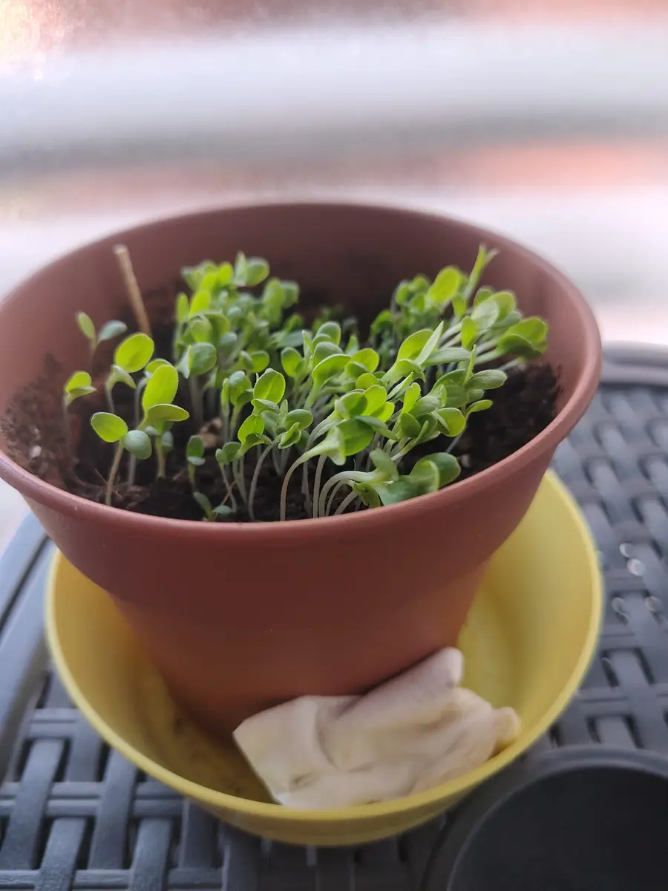
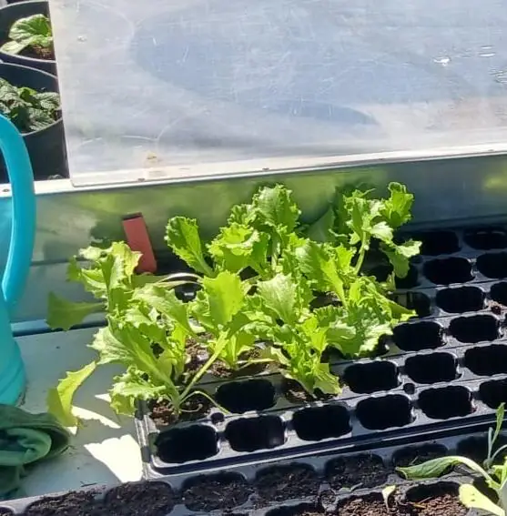

En un balcón pequeño el otoño y el invierno no son una pausa: son la mejor época para hojas verdes, hierbas y raíces de ciclo corto. Aguantan bien el fresco, no necesitan tanto sol como un tomate y se cultivan en macetas modestas. En esta guía tienes qué sembrar, qué tamaño de maceta usar, cómo regar con menos horas de luz y qué hacer cuando llegan las heladas.

Plántulas de lechuga en una maceta de barro con plato, cultivadas junto a una ventana. No es un balcón ni una siembra de otoño: la foto sirve para ver lo poco que necesita una lechuga para empezar.
1. Antes de sembrar: luz, frío y espacio
- Luz: en invierno los días son cortos y el sol está bajo. Las hojas verdes (lechuga, acelga, espinaca, rúcula) se conforman con unas 4 o 5 horas de luz al día, incluso con algo de sombra. Las raíces y los bulbos piden algo más.
- Frío: depende de tu zona. En la costa o en ciudades de clima suave casi todo sigue creciendo en invierno. En el interior, con heladas, conviene proteger las macetas o elegir las plantas más resistentes (más abajo).
- Viento y lluvia: el viento frío seca y quema las hojas. Pegar las macetas a la pared y alejarlas de las esquinas expuestas ayuda mucho.
- Macetas: con drenaje (agujeros) y un plato debajo. Las de barro se secan antes; las de plástico retienen más humedad, algo útil en balcones soleados y menos en invierno.
2. Qué sembrar: las plantas más agradecidas
Esta lista resume las opciones más fáciles para macetas. Los plazos son orientativos: dependen de la variedad, de la temperatura y de la luz que reciba tu balcón.
- Lechuga (hoja de roble, 4 estaciones, romana): maceta de 15-20 cm de fondo; 2 o 3 plantas en una maceta de unos 30 cm. Se puede ir cortando hoja a hoja. Siembra hasta noviembre en climas suaves.
- Acelga: necesita una maceta algo más profunda (25-30 cm). Aguanta bien el frío y rebrota si cortas las hojas externas dejando el centro.
- Espinaca: le gusta el fresco y se pasa con el calor. Maceta de 20 cm; recolecta en unas 6 a 8 semanas.
- Rúcula: de las más rápidas, a las 4-6 semanas ya se puede cortar. Con frío intenso crece más despacio.
- Canónigos: muy resistentes al frío, pero lentos (6-8 semanas). Útiles si quieres hojas en pleno invierno.
- Rabanitos: ciclo corto (unas 4 semanas) y poca profundidad (15 cm). Siémbralos a chorrillo y aclara después.
- Cebollino, perejil y cilantro: hierbas que aguantan el fresco en maceta pequeña; el perejil tarda en nacer (a veces tres semanas).
- Ajos y habas: si tienes maceta grande y mucha paciencia. Los ajos se plantan en otoño (diente con la punta hacia arriba) y tardan meses; las habas piden más de 30 cm de fondo.
3. Cómo sembrar en maceta, paso a paso
- Llena la maceta con sustrato universal suelto (si quieres prepararlo tú, mira Cómo hacer el sustrato) y déjalo plano, sin llegar al borde.
- Riega antes de sembrar, hasta que salga agua por los agujeros. Si la tierra se hunde, añade un poco más y alisa la superficie.
- Reparte las semillas y cúbrelas con muy poca tierra: las de lechuga y rúcula, casi nada; las de rabanito, medio centímetro.
- Mantén la tierra húmeda, no encharcada. Un pulverizador evita desenterrar las semillas.
- Cuando las plántulas tengan sus primeras hojas verdaderas, aclara: deja las más fuertes con espacio entre ellas. Si las dejas todas juntas compiten y ninguna crece bien.
- Siembra escalonada: en vez de sembrar toda la maceta de golpe, siembra un poco cada 2 o 3 semanas y tendrás hojas durante más tiempo.

Lechugas jóvenes en una bandeja de semillero. Sembrar primero en semillero y trasplantar después es una opción cómoda si tienes poco sitio.
4. Riego y cuidados con frío y poca luz
- Riega menos que en verano: con temperaturas bajas la tierra tarda más en secarse. Mete un dedo 2 cm: si está húmedo, espera.
- Riega por la mañana y con agua que no esté helada, para evitar que la humedad se quede toda la noche en las hojas.
- Heladas: cuando se anuncien, cubre las macetas por la noche con una manta térmica agrícola o una tela fina y pasa las más delicadas dentro. Retira la cubierta de día.
- Abono: las hojas verdes agradecen un poco de compost o abono orgánico suave una vez al mes; no abones de más en invierno.
- Cosecha poco a poco: corta las hojas externas y deja el centro para que siga creciendo.
5. Problemas frecuentes en balcón
- Plantas largas y débiles: falta de luz. Acércalas a la zona más soleada o siembra algo que tolere más sombra, como las hierbas y la acelga.
- Moho o pelusa blanca en la tierra: exceso de humedad. Riega menos y mira Moho blanco en la tierra de las macetas.
- Mosquitas pequeñas alrededor de la maceta: suelen salir con la tierra siempre mojada; tienes la solución en Mosquitas del sustrato.
- Semillas que no nacen: tierra seca, sembradas muy hondas o demasiado frío para esa especie. Si el frío es fuerte, protege la maceta o espera a que suba la temperatura.
- Hojas amarillas: casi siempre exceso de riego o maceta sin drenaje.
Preguntas rápidas
¿Puedo sembrar en un balcón sin sol directo? Sí, con hojas verdes y hierbas. Crecerán más despacio, pero se conforman con pocas horas de luz.
¿Qué es lo más fácil para empezar? Lechuga de hoja suelta, rúcula y rabanitos: nacen rápido y se ven resultados en pocas semanas.
¿Aguantan el frío? Acelga, espinaca, canónigos y ajos aguantan bastante; la lechuga tolera frío suave, pero con heladas fuertes necesita protección.
¿Y el tomate? Es una planta de verano: no aguanta el frío. Si quieres planearlo para primavera, lee Germinar semillas de tomate en servilleta.
¿Qué maceta uso si tengo poco espacio? Una maceta de 30 cm de ancho y 20 de fondo da para dos o tres lechugas o para un puñado de rúcula y rabanitos.
Son pautas generales para el clima de España: los plazos y las fechas de siembra cambian según tu zona, la orientación del balcón y las heladas. Las fotos del artículo son mías (lechugas cultivadas en macetas y semillero) y no corresponden a una siembra de otoño en balcón.
Te puede interesar: Cultivar lechugas en casa · Cómo hacer el sustrato · Plantas de interior con poca luz · Germinar semillas de tomate

¿Prefieres que te lo monte yo?
Hago terrarios cerrados por encargo en la Comunidad de Madrid, desde 25 €.
Ver cómo pedir el tuyo →